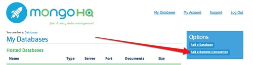

NodeKO
If you are participating in the Node Knockout and are using MongoDB in your plans of 48 hour domination then I hope you took advantage of the no limit DB we offered to contestants. If you did take advantage of it but wish you had a UI to visualize data and run queries in then wish no more.
You can always signup for a MongoHQ account for free and use our remote connections to connect to your DB while using the MongoHQ interface to interact with your data, add indexes, and run queries.
Step 1 (Cut a hole in a box)
From the MongoHQ home page you will find an *Add a Remote Connection *link.
**Step%202**%C2%A0(Put%20your%20junk%20in%20that%20box)
Fill in the remote connection form with the credentials given to you.
**Step%203**%C2%A0(Make%20her%20open%20the%20box)
Now enjoy your data. You can navigate, query, insert/edit/remove documents, add/delete indexes and upload/inspect items in gridfs.
